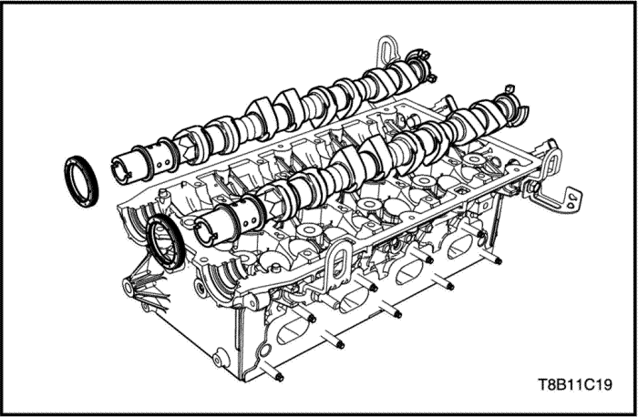


serie de válvulas
Herramientas necesarias
Compresor universal de muelles de válvula EN-49074
Adaptador del compresor de muelles de válvula - EN-49155
Dispositivo de succión KM-845
Procedimiento de desmontaje
- Desmonte el árbol de levas. Consulte el apartado "Reparación de la unidad-Árbol de levas"de esta sección.

Precaución: No rasque el taqué de válvula Y no deben utilizarse guantes ni herramientas, excepto las herramientas de servicio especiales.
- Desmonte el taqué de la válvula utilizando el dispositivo de succión (KM-845).

- Instale el compresor universal de muelles de válvulas (EN-49074) y el adaptador (EN-49155).
- Desmonte la chaveta de válvula.
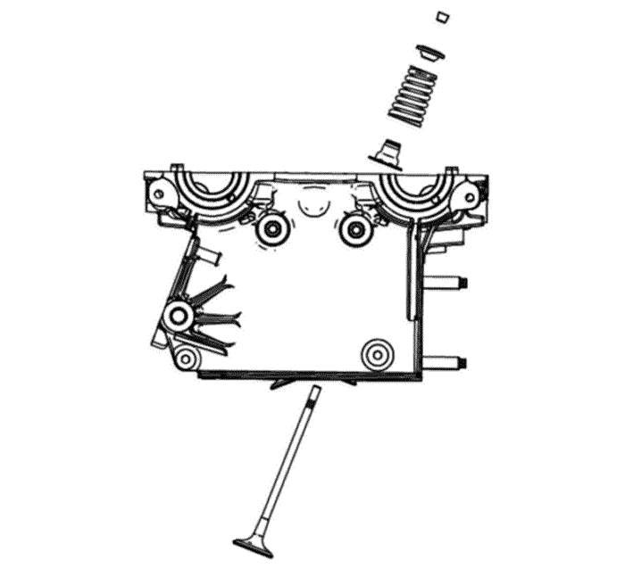
- Desmonte las válvulas, los muelles, los retenes y las juntas.
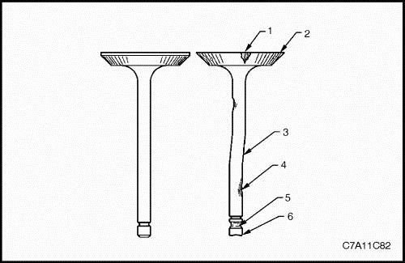
Comprobación de las válvulas
- Compruebe si la válvula tiene daños desde la cabeza hasta la punta.
- depósitos en la zona del asiento de la válvula (1)
- falta de margen en la válvula (2)
- curvado del vástago de la válvula (3)
- depósitos o desgaste excesivo del vástago (4)
- ranuras de la chaveta de la válvula desgastadas (5)
- punta de la válvula desgastada (6)
- Sustituya la válvula si se da alguno de estos problemas.
- Compruebe los muelles de válvula. Si los extremos del muelle de válvula no son paralelos, sustituya el muelle.
- Compruebe la superficie de asiento de los muelles de válvula de los rotadores de válvulas en busca de desgastes o surcos. Sustituya según necesidades.

Aviso: La guía de válvula no puede moverse. Sustituya la culata si está fuera de las especificaciones.
- Mida el diámetro del vástago de la válvula y el diámetro interior de la guía de la válvula. Si está fuera de las especificaciones, sustitúyalo. Consulte el apartado "Especificaciones del motor" de esta sección.

- Mida la longitud libre del muelle de la válvula. Si está fuera de las especificaciones, sustitúyalo. Consulte el apartado "Especificaciones del motor" de esta sección.

- Mida los ángulos del muelle de la válvula. Si está fuera de las especificaciones, sustitúyalo. Consulte el apartado "Especificaciones del motor" de esta sección.
procedimiento de montaje
- Instale la chaveta de retención, el muelle de válvula y la junta.
- Instale el compresor universal de muelles de válvulas (EN-49074) y el adaptador (EN-49155).
- Monte la chaveta de válvula.
Precaución: No rasque el taqué de válvula Y no deben utilizarse guantes ni herramientas, excepto las herramientas de servicio especiales.
- Instale el taqué de válvula.
- Monte el árbol de levas. Consulte el apartado "Reparación de la unidad-Árbol de levas"de esta sección.
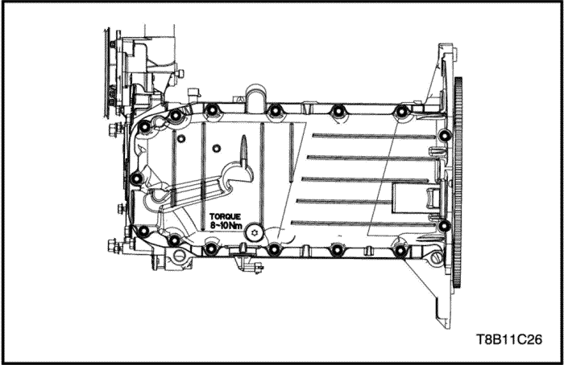
Pistón / Aro / Biela
Herramientas necesarias
Instalador de pistones EN-49153 (sólo 1.6L)
Procedimiento de desmontaje
Precaución: Tenga mucho cuidado de no rayar o dañar el lado interno del cilindro, pistón y cojinetes de la tapa de la biela.
- Desmonte el refrigerador de aceite del motor. Consulte el apartado "Refrigerador de aceite" de esta sección.
- Desmonte el compresor del A/A. Consulte la Sección 7B, Sistema HVAC.
- Desmonte el alternador. Consulte la sección 1E2, Sistema eléctrico del motor.
- Desmonte el motor de arranque. Consulte la sección 1E2, Sistema eléctrico del motor.
- Desmonte el cárter del aceite. Consulte el apartado "Cárter del aceite" de esta sección.
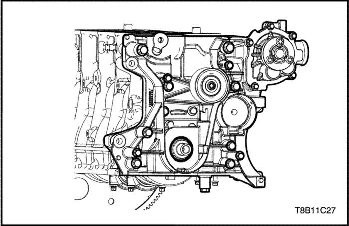
- Desmonte el conjunto de la bomba de aceite. Consulte el apartado "Bomba de aceite" de esta sección.
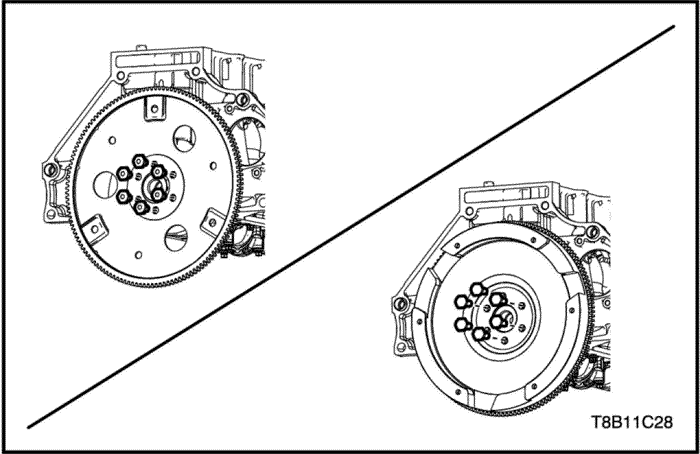
- Desmonte la placa flexible o volante motor. Consulte el apartado "Placa flexible/Volante motor"de esta sección.

Importante: Compruebe y confirme la secuencia de montaje del pistón y la secuencia de montaje del cojinete de biela, no confunda dichas secuencias.
- Quite los tornillos y la tapa de biela.
- Desmonte el conjunto del pistón.
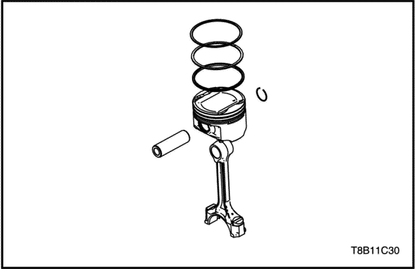
- Separe el bulón del pistón.
- Separe el aro del pistón del pistón utilizando una herramienta de expansión.
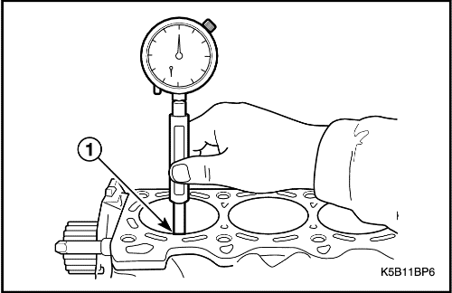
Inspección
- Limpie el interior del cilindro con un trapo limpio.
- Compruebe si está dañado el interior del cilindro.
- Mida el diámetro interior del cilindro. Si está fuera de las especificaciones, sustitúyalo. Consulte el apartado "Especificaciones del motor" de esta sección.
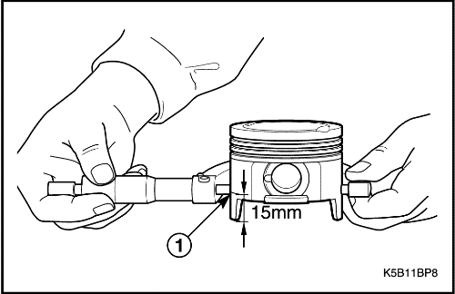
- Limpie el pistón con un trapo limpio.
- Mida el diámetro exterior del pistón a 15 mm de altura respecto a la parte inferior. Si está fuera de las especificaciones, sustitúyalo. Consulte el apartado "Especificaciones del motor" de esta sección.
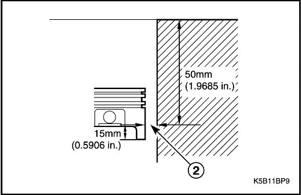
- Mida el diámetro interior del cilindro a 50 mm por debajo de la superficie de la culata y la holgura del pistón a 15 mm por encima del extremo de la falda del pistón. Si está fuera de las especificaciones, sustitúyalo. Consulte el apartado "Especificaciones del motor" de esta sección.
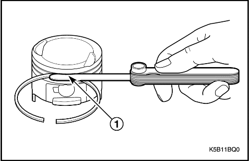
- Mida la holgura de la ranura del aro del pistón. Si la holgura de ranuras del segmento del pistón está fuera de las especificaciones, sustituya el pistón y los segmentos. Consulte el apartado "Especificaciones del motor" de esta sección.

- Mida la holgura del aro del pistón. Si la distancia entre puntas del segmento está fuera de las especificaciones, sustituya el segmento del pistón. Consulte el apartado "Especificaciones del motor" de esta sección.

- Mida el bulón del pistón. Si está fuera de las especificaciones, sustitúyalo. Consulte el apartado "Especificaciones del motor" de esta sección.

- Corte el indicador (a) plástico a la misma longitud que la anchura del cojinete y colóquelo en el cojinete del cigüeñal. Debería quedar en paralelo con respecto al cigüeñal.
- Monte el cojinete de biela y las tapas. Apriételo.
Apretar
Apriete los tornillos de la biela hasta 35+45°+15° N•m (25,8+45°+15° lb-pie)
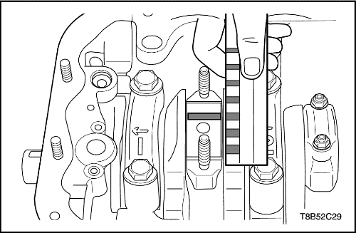
- Desmonte las tapas y los cojinetes de biela de nuevo.
- Mida la holgura del aceite del cojinete de la biela según la escala del indicador de plástico. Si está fuera de las especificaciones, sustitúyalo. Consulte el apartado "Especificaciones del motor" de esta sección.
procedimiento de montaje
Precaución: Tenga mucho cuidado de no rayar o dañar el lado interno del cilindro, pistón y cojinetes de la tapa de la biela.
- Instale el bulón del pistón.
- Instale el aro del pistón del pistón utilizando una herramienta de expansión.
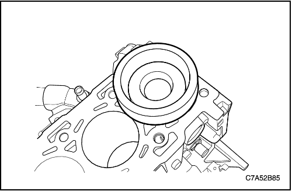
Importante: Compruebe y confirme la secuencia de montaje del pistón y la secuencia de montaje del cojinete de biela, no confunda dichas secuencias.
- Instale el conjunto del pistón utilizando el instalador de pistones (sólo 1.6L) (EN-49153).
- Monte la tapa de la biela y los tornillos con los cojinetes.
Apretar
Apriete los tornillos de las tapas de bielas hasta 35+45°+15° N•m (25,8+45°+15° lb-pie)
- Monte la placa flexible o volante motor. Consulte el apartado "Placa flexible" o "Volante motor" de esta sección.
- Monte el conjunto de la bomba de aceite. Consulte el apartado "Bomba de aceite" de esta sección.
- Monte el refrigerador de aceite del motor. Consulte el apartado "Refrigerador de aceite" de esta sección.
- Monte el compresor del A/A. Consulte la Sección 7B, Sistema HVAC.
- Monte el alternador. Consulte la sección 1E2, Sistema eléctrico del motor.
- Monte el motor de arranque. Consulte la sección 1E2, Sistema eléctrico del motor.
- Monte el cárter del aceite. Consulte el apartado "Cárter del aceite" de esta sección.
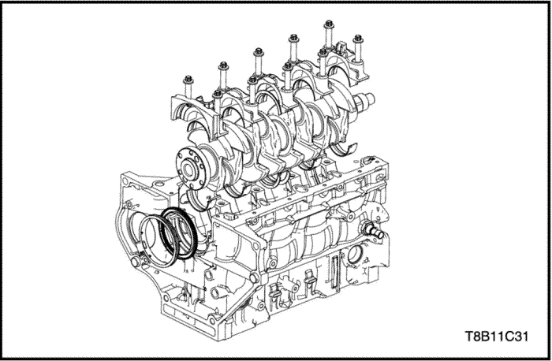
Cigüeñal
Herramientas necesarias
Instalador del retén de aceite trasero del cigüeñal EN-49204
Procedimiento de desmontaje
Precaución: Tenga mucho cuidado de no rayar, mellar o dañar el lado interior del cilindro y los cojinetes. Si no fuera así, el motor podría sufrir daños.
Importante: Revise y confirme las secuencias de las tapas y cojinetes del cigüeñal para evitar confusiones.
- Quite los tornillos de las tapas del cigüeñal.
- Quite las tapas del cigüeñal con los cojinetes lisos.
- Desmonte el cigüeñal.
- Desmonte el retén de aceite trasero del cigüeñal con la carcasa.
- Separe el retén de aceite trasero del cigüeñal de la carcasa.
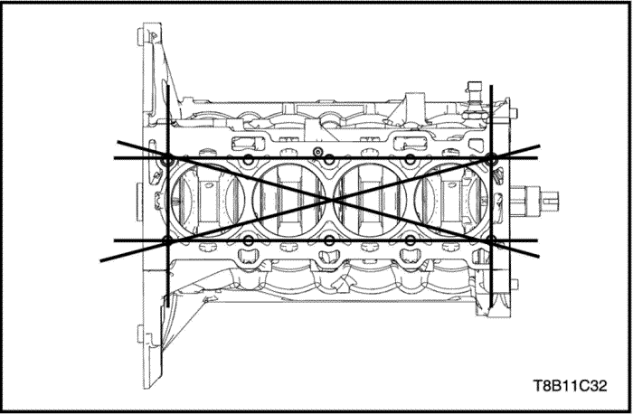
Inspección
- Mida la planeidad del bloque. Si está fuera de las especificaciones, sustitúyalo. Consulte el apartado "Especificaciones del motor" de esta sección.

- Mida la ovalización (curvado) del cigüeñal. Si está fuera de las especificaciones, sustitúyalo. Consulte el apartado "Especificaciones del motor" de esta sección.
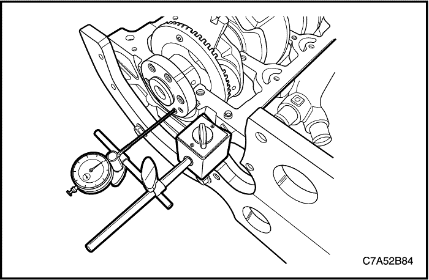
- Mida el juego axial del cigüeñal. Si está fuera de las especificaciones, sustitúyalo. Consulte el apartado "Especificaciones del motor" de esta sección.

- Corte el indicador (a) plástico a la misma longitud que la anchura del cojinete y colóquelo en el cojinete del cigüeñal. Debería quedar en paralelo con respecto al cigüeñal.
- Instale el cojinete liso del cigüeñal y la tapa.
- Desmonte el cojinete de la biela y la tapa de nuevo.
- Mida la holgura del aceite del cojinete de la biela según la escala del indicador de plástico. Si está fuera de las especificaciones, sustitúyalo por uno nuevo. Consulte el apartado "Especificaciones del motor" de esta sección.
procedimiento de montaje
Precaución: Tenga mucho cuidado de no rayar, mellar o dañar el lado interior del cilindro y los cojinetes. Si no fuera así, el motor podría sufrir daños.
Importante: Revise y confirme las secuencias de las tapas y cojinetes del cigüeñal para evitar confusiones.
- Recubra/lubrique el cigüeñal y los cojinetes.
- Instale el cigüeñal con los cojinetes en secuencia.
- Coloque las tapas del cigüeñal con los cojinetes lisos.
Apretar
Apriete los tornillos de las tapas del cigüeñal hasta 50+50° N•m (36,8+50° lb-pie).

- Acople el retén de aceite trasero del cigüeñal a la carcasa.
- Instale el retén de aceite trasero del cigüeñal utilizando el retén de aceite trasero del cigüeñal (EN-49204).
| © Copyright Chevrolet Europe. Reservados todos los derechos |